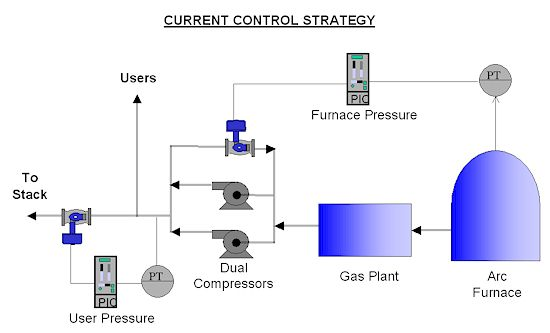
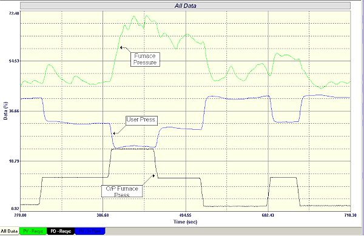
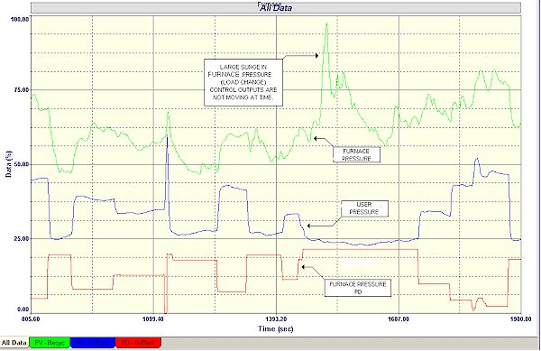

|
| [Home] [About us] [Contact us] [Training] [Optimisation services] [Protuner] |
| [Loop signatures] [Case histories] [Continuous loop performance monitoring] |
|
Control Loop Case History 86 PROBLEMS IN CONTROLLING THE PRESSURE IN AN ARC FURNACE Some interesting problems relating to pressure control were presented to me recently which concerned the control of pressures in an arc furnace in a metals plant. Figure 1 shows a block diagram of the process. A large amount of combustible gas is produced whilst the furnace is operating. The gas is sucked out of the furnace, and passes though a gas plant where it is cleaned. The suction is provided by two compressors connected in parallel, which are situated downstream from the gas plant. A certain amount of the gas is used as fuel for other processes in the plant, and the remainder is sent to the stack.  Figure 1 The process people who designed the plant wished to control the gas pressure at two places as follows:
As can be seen in Figure 1, the designers attempted to achieve the first of these two objectives by mounting a recycle valve around the compressors to vary the suction pressure at the compressor inlet. It was hoped that adjusting this valve by the furnace pressure controller would be able to keep the furnace pressure at the desired control setpoint. To control the users' pressure a control valve was installed before the stack to control the of the compressors' outlet pressure which feeds to the users (and of course also to the stack). This was implemented by measuring the compressor outlet pressure and adjusting the valve via the users' pressure controller. Unfortunately these control strategies have some fatal flaws in them which prevented the system from working as was intended, and resulted in large costs in having to replace the seals on the furnace on a fairly regular basis. Also gas plant trips occurred frequently due to high user pressure surges, at the compressors' outlets. What occurred in practice was that very poor control was achieved. One of the major problems is that the pressure inside the furnace varies continuously as conditions in an arc furnace are in a continuous state of flux , and can fluctuate extremely rapidly and frequently. From time to time, some sort of substantial event occurs inside the furnace that results in a huge pressure surge for a short while. Such a surge can be seen in Figure 3, where the furnace pressure suddenly spiked up and then back down at a time when both controllers were in manual, with steady outputs. The next problem is that the two control loops are in fact highly interactive. Looking at the block drawing it appears pretty obvious that any movement in the furnace pressure control valve must have an effect simultaneously on the compressors' output as well as on the suction pressure. So any action taken by the furnace pressure controller will also immediately effect the compressors' outlet pressure, which is the users' pressure. To give an example of how this interaction works, let us imagine that conditions were fairly steady, and the controllers are managing to keep the pressures more or less at their setpoints. Suddenly there is a large pressure surge in the furnace. The furnace pressure controller will immediately start closing the recycle valve to increase suction. The compressors' outlet pressure, which is the users' pressure will also then increase immediately. The users' pressure controller will sense this and will then start opening the vent valve to drop the in-plant pressure, which in turn will effect the suction pressure and so-on. Unfortunately feedback control cannot cope well in interactive situations. If you have two interactive feedback loops, all you can really do to decouple them (without resorting to more advanced techniques like dynamic decouplers), is to tune the one fast and the other much slower. If you really think about it, the ultimate method of decoupling is to put one loop in manual! The difficulty on this system is that because of the sudden and violent pressure surges in the furnace, one really needs fast control on the furnace pressure to try and catch the surges. It is actually doubtful if feedback control would be fast enough to completely achieve this, but certainly it could reduce the magnitude of the surges considerably, and keep a much better average pressure in the furnace. However if one did tune the furnace pressure controller faster, then as mentioned above, when a pressure surge occurs in the furnace, the controller will immediately start closing the recycle valve, which will increase the suction pressure at the compressors' inlets. However simultaneously the users' pressure at the compressors' discharge will also increase. Now if we have tuned the furnace pressure loop fast, it will be necessary to really slow down the user pressure controller to try and minimise interaction. Therefore this controller will be too slow to deal with the increased pressure at the compressors' outlets which will result the users' pressure increasing rapidly. Unfortunately the users cannot cope with too high a pressure, and the high pressure sensor on the users' pressure will trip the gas plant immediately on such pressure surges. An attempt was in fact made to try and tune the furnace pressure controller faster but it kept on tripping the system - to the consternation of the Production people.. In order to get a better understanding and feeling of the dynamics in the system, some tests were performed. Initially both controllers were placed in manual, and steps in the output of the furnace pressure controller were made whilst the users' pressure controller's output was kept constant. After that steps in the output of the users' pressure controller were made whilst the furnace pressure controller's output was kept constant. These tests are shown in Figures 2 and 3 respectively.  Figure 2  Figure 3 Two very interesting things were observed from these tests. Firstly because the furnace is quite a long way away from the compressors, and there is quite a large volumetric capacity in the piping and in the gas plant between the two, it had always been assumed that there would be quite a bit of deadtime before changes in the furnace pressure control valve would affect the users' pressure. However the tests show this is not true and the deadtime is almost zero. The pressure changes move though the system incredibly quickly, as can be seen in the figures. Secondly the tests showed just how interactive the system is in reality. Changes on either of the controller's outputs had immediate and virtually equal effects on the users' pressure, and on the furnace pressure. However the furnace pressure did not always react very positively to these changes, which is almost definitely due to the rapidly fluctuating conditions occurring in the furnace. In the report to the client the following points were made:
Epilogue The client accepted the recommendations. The system was changed so that the users' gas was supplied from a completely separate compressor, whilst the furnace pressure control was changed so that the control valve vented air directly to the stack, and the recycle valve across the compressor was not used for control. This effectively decoupled the two pressure controls. The client reports that the new control strategy is working well, and that outages are down considerably, and replacement of furnace seals reduced drastically. Michael
Brown is a specialist in control loop optimisation, with many years of
experience in process control instrumentation. His main activities are
consulting, and teaching practical control loop analysis and
optimisation. He gives training courses which can be held in clients'
plants, where students can have the added benefit of practising on live
loops. His work takes him to plants all over South Africa, and also to
other countries. He can be contacted at: |